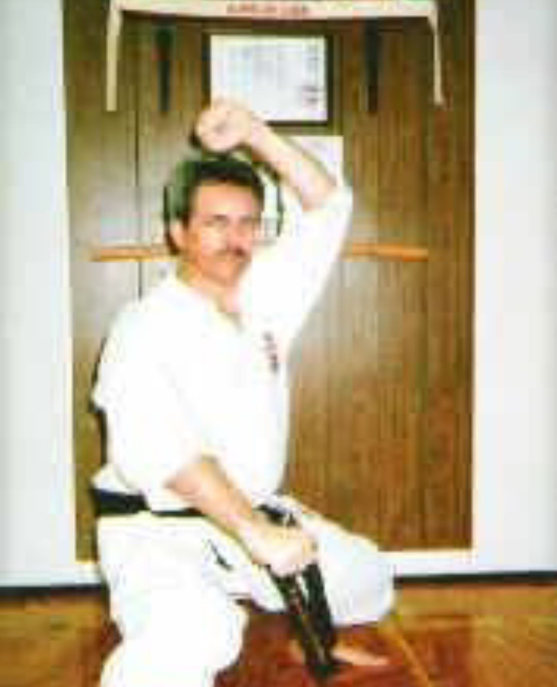

Federation leadership
O’Sensei Brian R. Fey Sr.
Chief Instructor, Japan ShotoJukuKai Dojo
O’Sensei Brian R. Fey Sr., a certified Japanese Yudansha, has studied Shotokan Karatedo and Kobudo for more than four decades.
Having trained directly with such notable instructors as H. Kanazawa, H. Fujishima, O. Ozawa, T. Okano, T. Miyazaki, F. Demura, M. Takahashi, and K. Funakoshi, O’Sensei Fey continues to share his invaluable training experiences with his students today.
Teaching professionally for more than 35 years, O’Sensei Fey also served as Chief Instructor of the State University of New York Karatedo Club and Technical Director of the USA Shotokan Kenkojuku Koyu Kai.
After competing in the 5th SKIF World Championships held in Yokohama, Japan, in 1994, O’Sensei Fey retired from competition as a proven winner. Over the last four decades, he has won many competitions and is now producing his own humble champions.
In addition to his study of Karatedo, O’Sensei Fey holds Yudansha—black belt—grades in Kobudo, the practice of ancient Japanese and Okinawan weaponry. He has also studied Iaido, the Japanese art of drawing and cutting with the sword.
Beyond Karatedo, O’Sensei Fey earned bachelor’s degrees in Administrative Management and Criminal Justice, a master’s degree in Psychology, an MBA in Management, and a PhD certificate in Business. In February 2014, he retired following a long and distinguished 33-year career.
O’Sensei Fey continues to bring his many years of experience wherever needed, teaching seminars and clinics across the United States. This includes conducting a weekend-long seminar at the United States Military Academy at West Point in the summer of 2000.
Before retiring from law enforcement, O’Sensei Fey served as a Police Department Patrol Supervisor and as a Senior Firearms, Combat Tactics, and Active Shooter Instructor.
Having also served as a Child Abuse Investigative Specialist, O’Sensei Fey developed the Stranger Danger A.L.E.R.T.™ Defense System course for children. The programme places an increased focus on safety and awareness skills for children and adults.
O’Sensei Fey is also a noted author on Japanese and Karatedo history. His articles on both subjects have appeared in Budo Dojo and Shotokan Karate magazines.